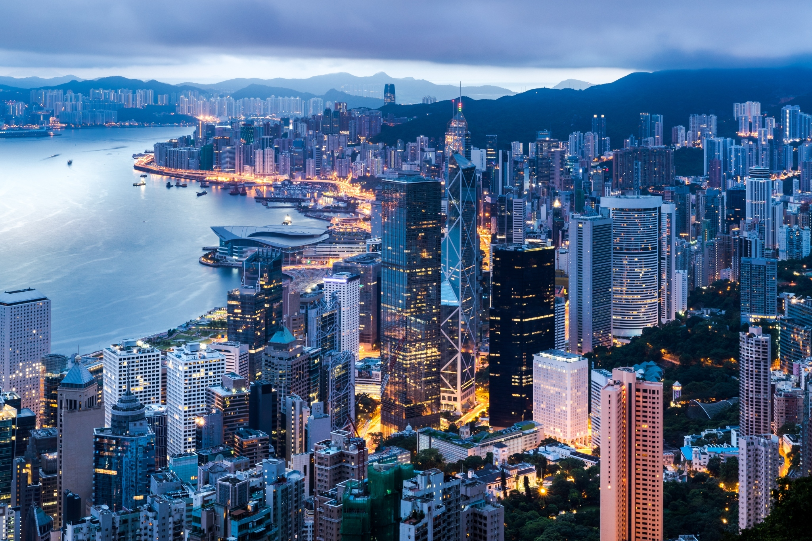

Conclusion
Hong Kong is commonly acknowledged as an international financial hub. Before that, Hong Kong has functioned as mainland China’s entrepot for much of its history. After WW2, Hong Kong economy flourished through industrialization and was established as one of the “Asian Dragons.” With China’s reform and opening-up in 1978, Hong Kong transformed into a service economy. Together with financial service and professional service, tourism benefited much from the strengthened connection with mainland.
The extradition bill protest started on March 15, 2019, and peaked in June, followed by several smaller scale protests throughout that year. Later in May 2020, the introduction of National Security Law drew another wave of strong reactions, but the scale was much smaller than the one in 2019.
This project has assessed the economic cost of the protest from multiple dimensions, including population, consumer retail sales, public transportation, employment, and GDP. Among the four key industries of Hong Kong, financial service managed to grow in 2019 and professional service remained unchanged, while both tourism and trading and logistic have experienced large decline. In regards to financial market and investment, Hang Seng index dropped more than 12%, and IPO volume declined significantly due to the market uncertainties. Foreign direct investment (FDI) has still grown in 2019, though at a slower rate. The analysis has employed unsupervised lexicon-based sentiment analyzer on Hong Kong linked news data from News IO and comment data from Reddit. News and Reddit have shown very different sentiment patterns.
This project further introduces a method to assess the economic effect of the protest under COVID-19: by subtracting virus infection rate rank from the GDP rank. It shows that even though Hong Kong was not impacted much by COVID-19 compared to other countries, its GDP still performed poorly.
On the bright side, Hong Kong has been and is still an important international trade port, and it likely will be in the future. From the financial service and FDI data, Hong Kong remains an attractive destination for investment and businesses, and it has a unique role in Asia financial market. The future is yet to come.